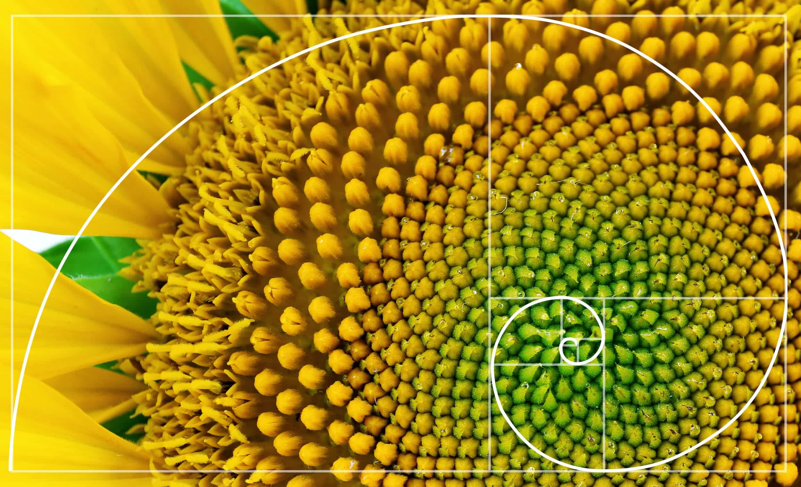

¿Cuál es el problema real?
En la naturaleza, la serie de Fibonacci aparece en los patrones de crecimiento de plantas, flores y ramas. Esta página modela cuántas ramas nuevas aparecen en cada nivel de una planta, siguiendo la progresión matemática que ocurre en la realidad.
Pétalos de flores
La mayoría de flores tienen 3, 5, 8 o 13 pétalos — siempre números de Fibonacci. Es la forma más eficiente de empacar pétalos alrededor de un centro.
Ramificación de plantas
Cada rama que nace de un tronco sigue el patrón Fibonacci: 1 → 1 → 2 → 3 → 5 → 8… maximizando la luz captada por la planta.
Espiral áurea
La razón entre términos consecutivos se aproxima a φ = 1.618 (número áureo). Esta proporción define la espiral visible en caracoles y galaxias.
Fibonacci en imágenes


¿Cómo funciona el algoritmo?
La Serie de Fibonacci
Empieza con 0 y 1. Cada número siguiente es la suma de los dos anteriores:
0 → 1 → 1 → 2 → 3 → 5 → 8 → 13 → 21…
Aplicación en Plantas
Cada nivel de crecimiento produce tantas ramas nuevas como indica el término correspondiente de la serie. El modelo refleja el crecimiento real.
El Algoritmo en JavaScript
Solo tres variables (a, b, c) y un ciclo for. Sin arreglos: sumas sucesivas. Resultado mostrado con getElementById().
// Solo variables simples, sin arrays
let a = 0;
let b = 1;
let c;
for (let i = 3; i <= niveles; i++) {
c = a + b; // suma de los dos anteriores
a = b;
b = c;
}
// Mostrar en la página con getElementById
document.getElementById("resultadoFibonacci").innerHTML = c;Simular crecimiento de planta 🌱
Ingresa cuántos niveles de crecimiento deseas simular. Se mostrará el número de ramas en cada nivel y el total acumulado:
Conclusión
Fibonacci no es solo matemática abstracta: es el lenguaje del crecimiento. Comprender este patrón permite modelar procesos naturales, diseñar estructuras eficientes y predecir comportamientos en biología, arquitectura y tecnología.